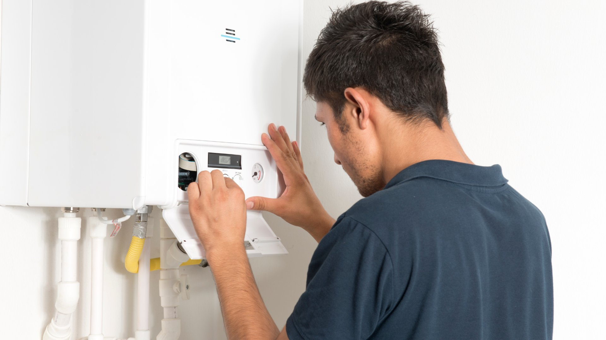

City Plumbing Services covers all of Salford — from the new-build apartments of MediaCityUK to the older terraces of Pendleton and Ordsall. Gas Safe registered engineers covering M5, M6, M7 and surrounding postcodes.
Salford is a tale of two property types. On one side, you have the modern apartment developments of MediaCityUK and Chapel Street — buildings with commercial-grade water systems, pressurised cylinders, and plumbing that needs someone familiar with new-build installations. On the other, you have the older terraces and semis of Pendleton, Ordsall, and Lower Broughton — properties where the pipework has been added to over decades and can be a real mixed bag.
We've been working across M5, M6, and M7 for years and understand both ends of the spectrum. The number of rental properties in Salford is among the highest in Greater Manchester, which means we're regularly called on for landlord gas safety inspections, emergency repairs between tenancies, and boiler replacements on properties that haven't seen attention in a decade. Whatever the property type, we come prepared.

All our services are available to Salford residents, landlords, and property managers across M5, M6 and M7.
Burst pipes, leaks, no hot water — available 24/7 across Salford. MediaCityUK apartments and Ordsall terraces alike, we respond fast and know where to find the stop taps in both property types.
Annual services, breakdown repairs, and full boiler replacements across Salford. Many older M5 and M6 properties are still running boilers that are well past their best — we'll advise honestly on repair versus replace.
Full bathroom renovations and wet rooms across Salford. We work in everything from compact MediaCityUK apartments to larger period properties in Lower Broughton, managing the whole job from design to final clean.
New heating systems, radiator upgrades, and power flushing. Many Salford terraces have heating systems that have been cobbled together over the years — we'll assess what's there and give you an honest plan.
Dripping taps, leaking pipes, running toilets, low water pressure — no job too small across Salford. Same-day availability on most general plumbing repairs in M5, M6, and M7.
Salford has a very high density of rental properties, particularly around Pendleton and the Chapel Street corridor. We work with landlords and letting agents throughout M5–M7, issuing CP12 certificates the same day.
The MediaCityUK development transformed a large part of Salford Quays over the past fifteen years, and the apartments built there — across Quayside, The Lightwell, and surrounding blocks — were built to a high specification with pressurised hot water systems and modern combi boilers. That doesn't mean they're problem-free. Pressurised systems lose pressure over time, expansion vessels fail, and combi boilers — even relatively new ones — develop faults. We work in MediaCityUK properties regularly and are familiar with the systems commonly installed there.
The older housing in Pendleton and Ordsall tells a different story. Many of these terraces and semis date from the early twentieth century, with pipework that's been added to, replaced in sections, and generally modified over many decades. It's common to open up a wall in these properties and find copper, iron, and plastic pipe all connected together, each section from a different era. This isn't a problem if you know what you're looking at — but it does require an experienced eye to work on safely.
Lower Broughton, Seedley, and Weaste all have similar characteristics: predominantly terraced housing, good rental demand, and a mix of owner-occupied and rented properties with varying maintenance histories. Boiler upgrades are probably the most common single job we do in this part of Salford, often replacing systems that have been limping along for years longer than they should.
Salford landlords — particularly those with properties on the Pendleton estate and around Frederick Road — often contact us to set up annual inspection schedules. We can book CP12 gas safety inspections across multiple properties in a single run, issue the certificates digitally the same day, and send reminders when renewal dates are coming up. It makes compliance straightforward when you're managing a portfolio.
City Plumbing Services has been based in Greater Manchester since 2009. We're fully Gas Safe registered (reg: 000000), carry £5 million public liability insurance, and have built our reputation on doing the job properly the first time. Call us on 0161 000 0000 for a free quote or to book an engineer across Salford and the surrounding area.
"Boiler stopped working in my flat on Clippers Quay. City Plumbing had someone out the next morning, diagnosed the fault quickly, and had it sorted within a couple of hours. Brilliant response time and the engineer was really clear about what the problem was. Wouldn't hesitate to use them again."
Tom R. — Clippers Quay, M50
"I have four rental properties in Pendleton and have been using City Plumbing for my annual gas safety certificates for three years. Always arrive on time, the certificates come through the same day, and any issues they spot get flagged clearly with a quote. Exactly the kind of reliable service you need as a landlord."
Sandra K. — Landlord, Pendleton, M6
"Had a new bathroom put in at our house on Liverpool Street in Ordsall. The team were fantastic — turned up when they said, kept everything clean and tidy, and the end result looks brilliant. They dealt with some really old pipework behind the tiles without making a drama of it. Really pleased."
Michelle D. — Ordsall, M5